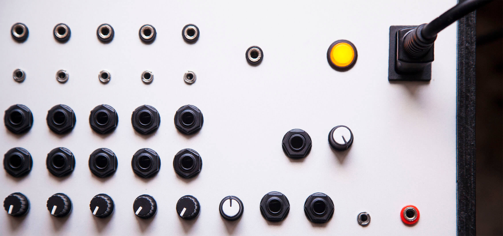

Mixer Specifications & Features
These are the features that make up all of our mixers.
>>> See gallery for application examples
You can also customize your mixer.
Active mixers
All inputs and outputs are buffered, never worry about crosstalk or unwanted hi-pass and lo-pass filtering.
You can use multiple cables on a single socket.
All inputs and outputs are also DC coupled, meaning you can use the mixer for both audio and control voltages, and mix them together seamlessly.
Can talk to all synth formats; Eurorack, Buchla, Serge, Bugbrand
Gain, voltage ranges and hard-limiting can be customized.
High input impedance, meaning you can use Hi-Z instruments, like guitars, plugging them directly into mixer inputs
Portability
Our units are shipped with a localized power cable and a 110-220v power supply, so what you receive is ready to be plugged in and used immediately, anywhere in the world.
Our mixers usually have a standard IEC C14 power inlet, so that finding replacements and adapters is super easy.
Other types of power connectors are available, like powerCon, see customization.
Quality raw materials
We only use top notch parts; Neutrik connectors, Alpha aluminum sealed potentiometers and high-efficiency, low-noise power supply units, all on high quality fab printed circuit boards.
Everything is carefully tested before shipping.
Custom enclosures
Custom-designed, made with hardwood sides and 1.5mm thick laser-cut anodized aluminum. Built like tanks.
Customizability
You can basically customize all aspects of your mixer...learn more